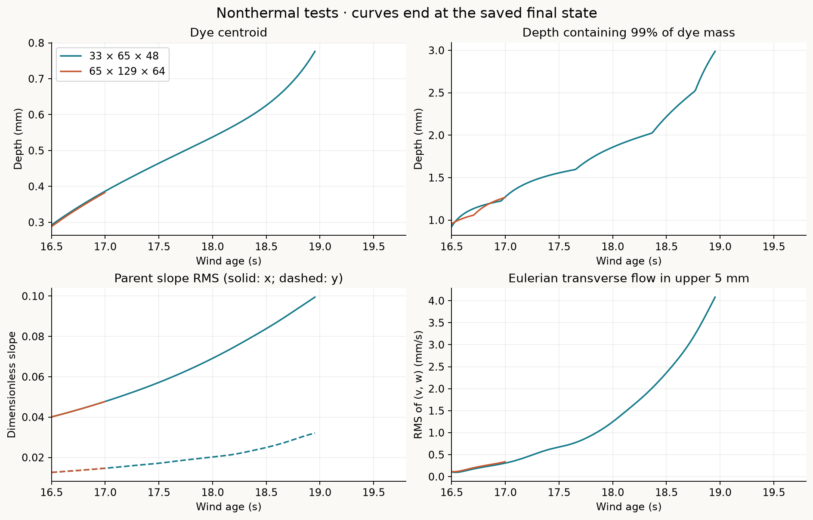
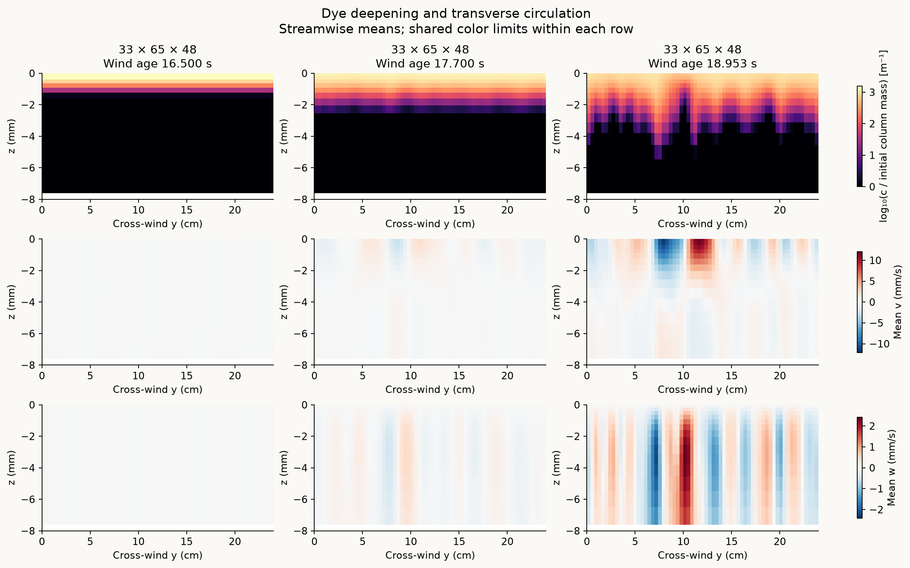
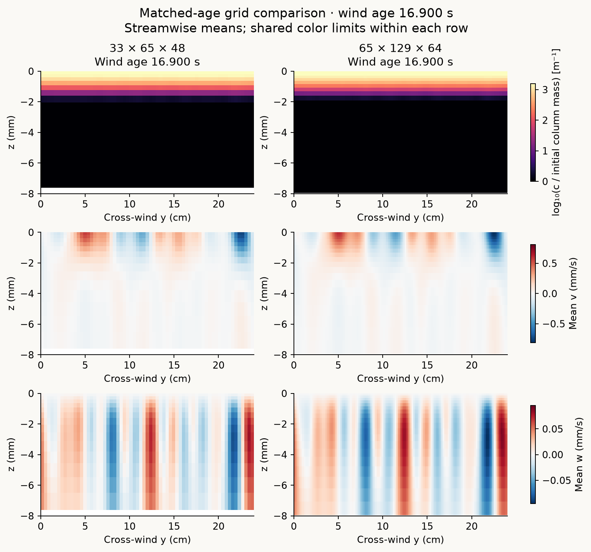
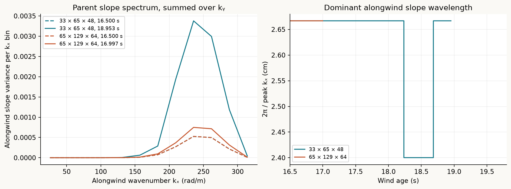
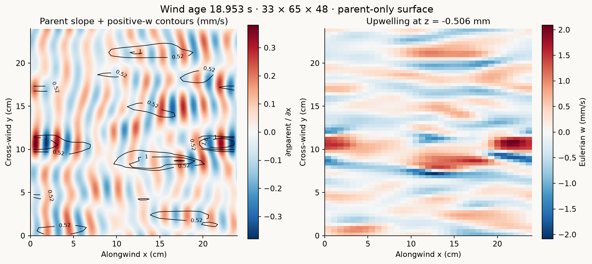

Both tests stopped at the 90-minute integration wall limit. The target was wind age 19.8 s. The coarse test reached 18.953 s and the finer test reached 16.997 s. These are exploratory results, not a spatial-convergence demonstration or a reproduction of the laboratory instability. Checkpoints were saved. No CHO ripple replay has been performed for these cases.
| Current grid (x × y × z) | Physical time evolved | Final wind age | Status |
|---|---|---|---|
| 33 × 65 × 48 | 2.453 s | 18.953 s | Partial · wall limit |
| 65 × 129 × 64 | 0.497 s | 16.997 s | Partial · wall limit |
Dye deepening and transverse structure
Histories use absolute wind age. The centroid is the concentration-weighted mean depth; z99 is the depth containing 99% of the column-integrated dye. Curves stop where data stop. Dye is initially confined to a 0.5 mm Gaussian layer; its diffusivity is 10⁻⁷ m² s⁻¹.



Wave growth and surface organization
A single wind-input coefficient drives the retained parent-wave band. The wind energy-growth rate is Γin = Cin ω (u*air/c)² max(cos θ, 0), with Cin = 0.0267739 and a cap from the supplied total stress. Molecular parent damping is retained; the extra parent-damping coefficient is zero. The 205 retained modes have independently randomized initial phases.


What was simulated
The periodic horizontal domain is 24 × 24 cm, with depth 1.25 m and exponentially stretched vertical cells. Both grids use the same parent-wave modes, wind forcing, initial physical perturbation pattern (0.1 mm/s horizontal RMS in the upper 5 mm), 1 ms time step, and two-way wave/current coupling. The total wind-stress ramp is an approximate Veron–Melville normalization, not an exact measured wind history. Oceananigans 0.107.0 advances the current with WENO5 advection and molecular viscosity 1.1 × 10⁻⁶ m²/s. The original passive dye is transported conservatively.
The short checks compare 1 ms and 0.5 ms steps over 0.02 s. They support the chosen step for the initial state only; they do not establish long-time accuracy or resolve the lab cell scale. The finite parent band, domain size, perturbation resolution and current grid all remain sensitivity questions.
No new physics was introduced for this publication. There is no thermal forcing, temperature tracer, buoyancy, convection, extra parent-wave decay, or CHO feedback. CHO settings retained in configuration files are placeholders for a possible replay, not completed CHO results.
Download the evidence
Histories are copied from the saved nonthermal r2 runs. Summary metadata include end times, wall-limit termination, dye-mass errors and snapshot ages. Configurations omit machine paths; time-step checks retain numeric and Boolean validation fields.
| Data | 33 × 65 × 48 | 65 × 129 × 64 |
|---|---|---|
| Dye history | CSV | CSV |
| Dye profiles | CSV | CSV |
| Current diagnostics | CSV | CSV |
| Wave input / loss | CSV | CSV |
| Wave slope history | CSV | CSV |
| Initial / final slope spectrum | CSV | CSV |
| Configuration | JSON | JSON |
| Short validation checks | JSON | JSON |
Laboratory context: Veron & Melville (2001), Experiments on the stability and transition of wind-driven water surfaces. Dye-benchmark context: Wagner et al. (2023), Transition to turbulence in wind-drift layers. Neither laboratory agreement nor a full Figure 15 reproduction is claimed here.